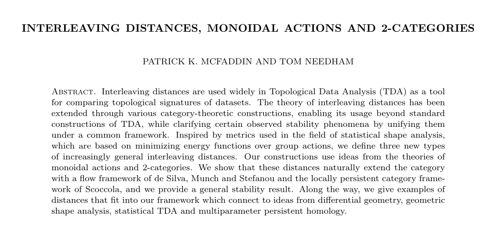
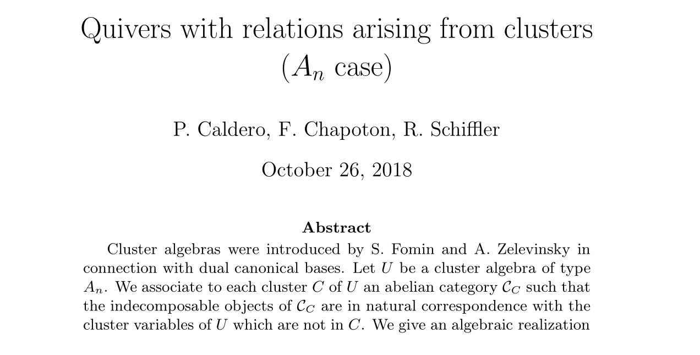
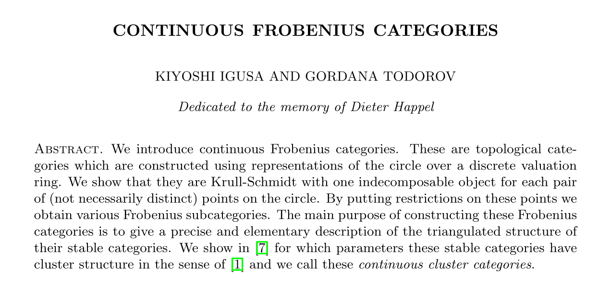
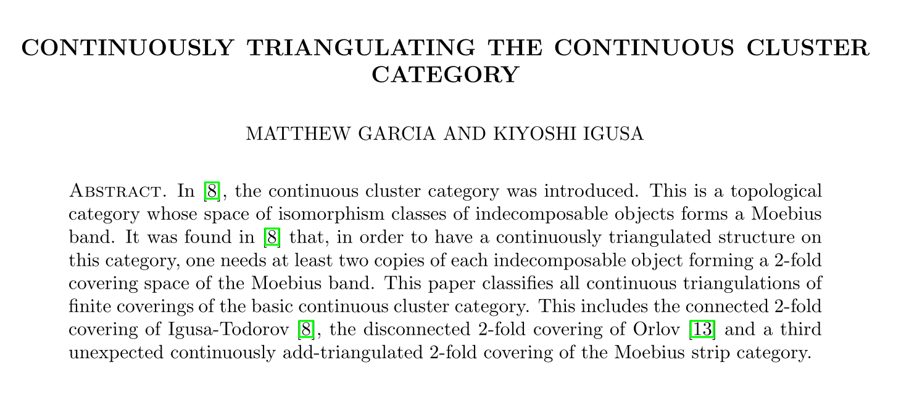

Interleavings and cluster categories
arising from the circle
Christian Chávez
Université de Sherbrooke
RTA2026
Plan
- $\operatorname{Fun}(\R, \operatorname{vect}_{\kk})$ and $\mathcal{C}_{A_n}$
- Rolling the line onto a circle
- The category of chords
- Connection to $\mathcal{C}_{A_n}$
- The interleaving distance on $S^1$
Persistence modules
Cluster categories
$\operatorname{Fun}(\R, \operatorname{vect}_{\kk})$
$\mathcal{C}_{A_n}$
$A_n\colon\ \circ \to \circ \to \cdots \to \circ$
$A_2\colon\ \circ \to \circ$
Interleavings
A $t$-interleaving of $\kk^I$ and $\kk^J$ is a pair of morphisms ${\phi\colon \kk^I \to \kk^J[t],\ \psi\colon \kk^J \to \kk^I[t]}$ that make the following diagrams commute.
The interleaving distance is $$d(\kk^I, \kk^J) = \inf\{\, t \geqslant 0 \mid \kk^I \text{ and } \kk^J \text{ are } t\text{-interleaved} \,\}.$$
Here $\kk^I[t] = \kk^{I-t}$.
The interleaving distance is $d(\kk^I, \kk^J) =$ “the least energy needed to align $I$ and $J$ to each other”.
$[c,d]$ is aligned to $[a,b]$ $\iff c \leqslant a \leqslant d \leqslant b \iff \Hom\bigl(\kk^{[a,b]}, \kk^{[c,d]}\bigr) \neq 0$
Rolling the line onto a circle
Rolling the line onto a circle
Admissible bijections
- Objects: two-element subsets of $S^1$, called chords.
- Morphisms: for two chords $A$ and $B$, we define $\Hom(A,B)$ as the free $\kk$-vector space with basis $\operatorname{Adm}(A,B)$. The identity morphism of $A$ is the admissible bijection $\operatorname{Id}_A$.
- Composition: for two basis morphisms $f \in \operatorname{Adm}(A,B)$ and $g \in \operatorname{Adm}(B,C)$ we define $$g \circ f = \begin{cases} gf & \text{if } gf \in \operatorname{Adm}(A,C), \\ 0 & \text{else.} \end{cases}$$ We extend $\circ$ bilinearly.
The Auslander–Reiten quiver of $\X_5$
Irreducible morphisms move one endpoint of a chord to the next vertex counterclockwise, keeping the other fixed. Identical chords are identified.

arXiv:2311.11936The interleaving distance in general
- Let $(G, \otimes, e)$ be a monoidal category. A $G$-actegory is a pair $(\mathbf{A}, T)$ where $\mathbf{A}$ is a category and $T$ is a monoidal functor $G \to \operatorname{End}(\mathbf{A})$.
- A monoidal weight on $G$ is a function $w\colon G_0 \to [0, \infty]$ such that $w(e) = 0$ and ${w(g \otimes h) \leqslant w(g) + w(h)}$ for all $g, h \in G_0$.
- Two objects $A, B \in \mathbf{A}$ are $(g, h)$-interleaved for $g, h \in G_0$, if there exist ${\phi\colon A \to T_g(B),\ \psi\colon B \to T_h(A)}$ in $\mathbf{A}$ and ${\alpha\colon e \to g \otimes h,\ \beta\colon e \to h \otimes g}$ in $G$ such that the diagrams commute.
- The associated $G$-interleaving distance is the function $d\colon \mathbf{A}_0 \times \mathbf{A}_0 \to [0, \infty]$ given by $$d(A, B) = \inf\{\, \max\{w(g), w(h)\} \mid A \text{ and } B \text{ are } (g, h)\text{-interleaved} \,\}.$$
Rotation of a chord

arXiv:math/0401316
arXiv:1209.0038
arXiv:1907.11365Persistence modules
The category of chords
Cluster categories
$\operatorname{Fun}(\R, \operatorname{vect}_{\kk})$
$\X$
$\mathcal{C}_{A_n}$
$A_n\colon\ \circ \to \circ \to \cdots \to \circ$
$A_2\colon\ \circ \to \circ$